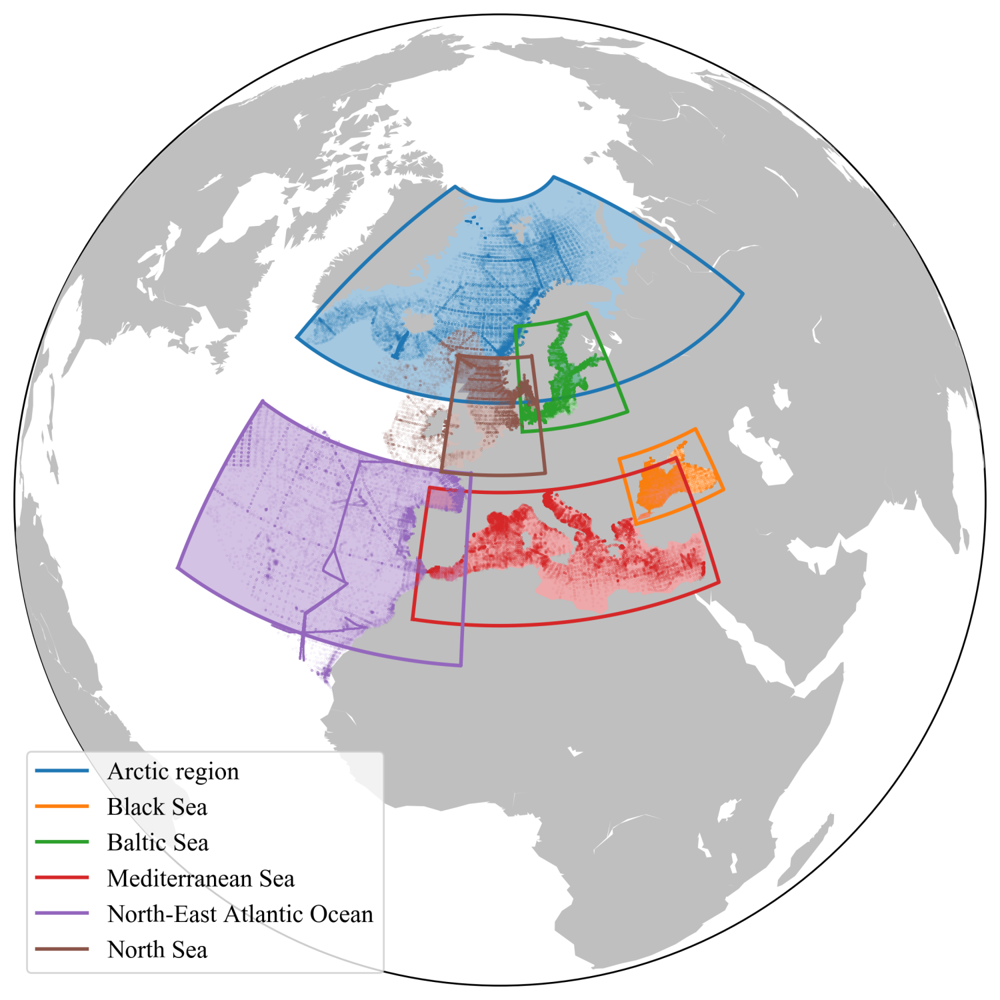
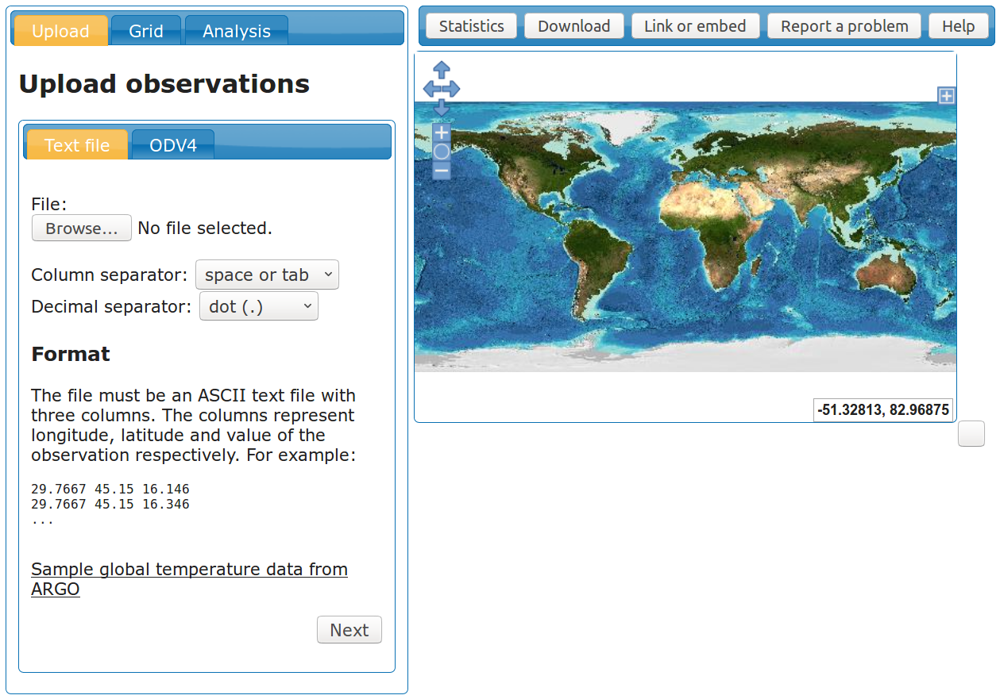

DIVA & DIVAnd interpolation tools
All you need to know about them
gher-ulg
@GHER_ULiege
0000-0002-0265-1021


What (who?) is DIVA?
Data
Interpolating
Variational
Analysis

What is [not] DIVAnd?
= n dimensional version of DIVA
≠not a new release of DIVA,
but a brand new code
What's the goal of DIVA{nd}?

Get gridded field from in situ data
What are the differences
between them?
Mathematical formulation
Programming language
User interface
Who wrote the code?


and a few others since 1991
Why ,
why not  or
or
 ?
?

Source: http://daftpunk.wikia.com, No copyright infringement is intended
Better...
Multiple dispatch
Math-friendly syntax
Unicode support: π, η, ∫ϵα
julia> 🌊 = 1./3.
julia> cos(🌊*π)
0.5000000000000001
Faster
Just-in-time (JIT) compiled
Parallelism
function fib(n::Int)
f=Vector{Int}(undef, n+1)
f[1]=f[2]=1;
for i=3:n+1
f[i]=f[i-1]+f[i-2]
end
return f
end
ff = @time fib(400000000);
1.158971 seconds (18.52 k allocations: 2.981 GiB, 0.84% gc time)
Stronger
Metaprogramming:
Julia programs can read, analyse, generate other Julia programs
"Easy" interfacing: R, Python, ...
@pyimport numpy.random as nr
nr.rand(3,4)
Harder
Learning a new and evolving language
Transition from 0.6 to 1.0
How can I get the code?

https://github.com/gher-ulg/DIVA
https://github.com/gher-ulg/DIVAnd.jl
Who's using it?
SeaDataCloud regional leaders, creating climatologies
https://www.seadatanet.org/Products/Climatologies
EMODnet Chemistry regional leaders
http://www.emodnet-chemistry.eu/products
EMODnet Biology (specific products)
http://www.emodnet-biology.eu/data-products
Example: zooplankton count in the Baltic Sea


Can I test it without installing it?
DIVA (2D) within Ocean Data View
http://odv.awi.de/

DIVA-on-Web (2D)
http://ec.oceanbrowser.net/emodnet/diva.html
Jupyter notebooks inside the Virtual Research Environment

DIVAnd REST API (2D)
Why (do we think) it is better than any other method?
Separation of sub-domains
Associated error field
Can I interpolate velocity measurements?
 Test areas: Ibiza Channel, Gulf of Trieste
Would you help me use it?
Why may I not be able to use it?
Hofstadter's Law:
even when you take into account Hofstadter's Law.
How to cite?
Barth, A., Beckers, J.-M., Troupin, C., Alvera-Azcárate, A., and Vandenbulcke, L.: DIVAnd-1.0: n-dimensional variational data analysis for ocean observations, Geosci. Model Dev., 7, 225-241, doi:10.5194/gmd-7-225-2014, 2014.
One DOI per code release
2.3.1 →2.3.0 →
...
Who is Julia?
Julia Child (1912-2004)